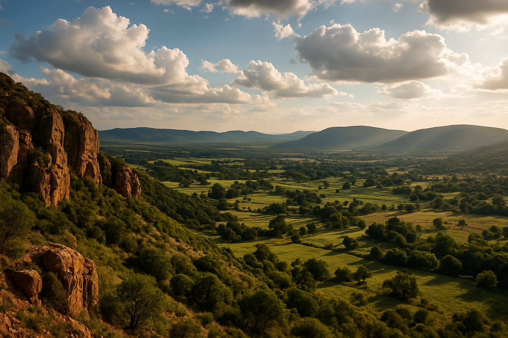

1. For Mountain Air & Total Tranquility: Magaliesburg
Nestled at the foot of the ancient Magaliesberg mountain range, this area is the official capital of "getting away from it all." It’s a place of quiet country lanes, quirky craft breweries, and breathtaking views. Whether you want to indulge in a spa treatment, hike a mountain trail, or simply sit on a stoep with a good book, Magaliesburg delivers pure peace.
Where to Stay:
- For a Romantic Escape: Check out the beautiful and intimate De Hoek Country Hotel.
- For a Luxury Spa Experience: Spoil yourself at the renowned Valley Lodge & Spa, known for its fine dining and impeccable service.